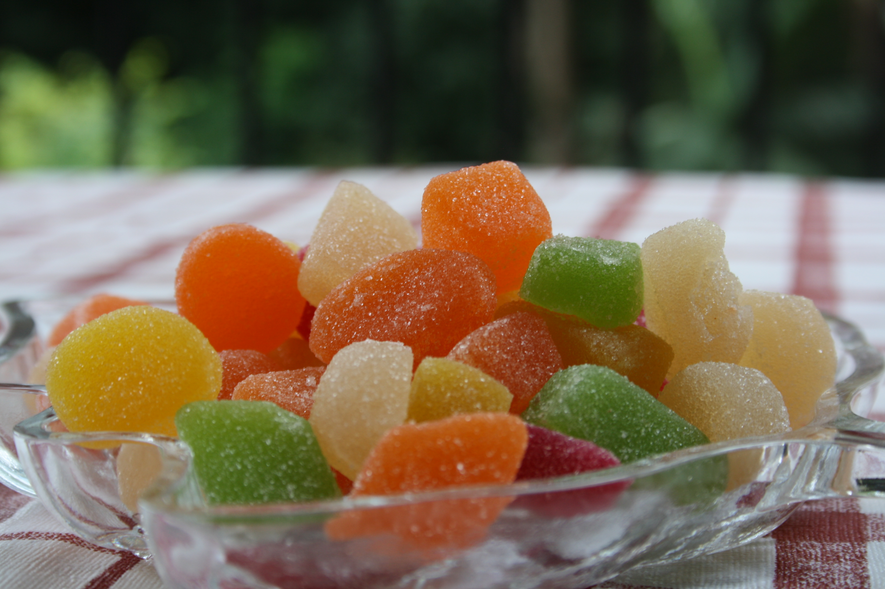
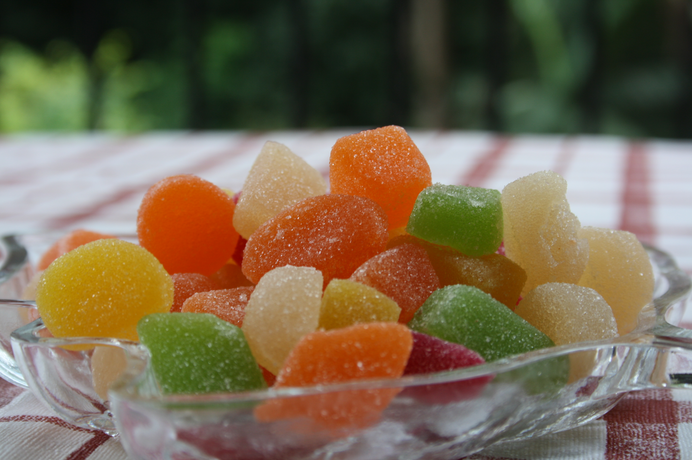

Наравне с закусками и деликатесами сладости входят в группу десертов. Их принято подавать в конце трапезы к горячим или слабоалкогольным напиткам. По правилам этикета десерты подают в специальной посуде и набирают десертными приборами (вилками, ложками, лопатками). Чтобы не ошибиться с выбором меню, посуды и вин, важно знать, какие бывают сладости.
Сладости – продукты питания с высокой концентрацией сахара. Условно они подразделяются на сахаристые и мучные изделия. В первую группу входят десерты на базе тертых орехов, взбитых яичных белков, желирующих агентов, какао-масла, плодового пюре. Ко второй группе относятся изделия из разных видов теста.
Важный момент! По-настоящему оригинальный продукт лучше приобретать на его «исторической Родине». Велика вероятность, что исходный рецепт не изменился со временем: сохранены состав ингредиентов, пропорции, технология приготовления. Такие сладости являются национальной гордостью, нередко продаются в сувенирных упаковках с символикой региона.

 
